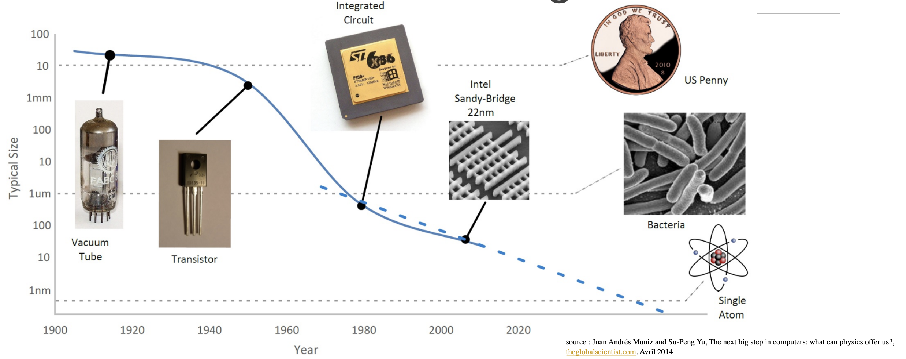
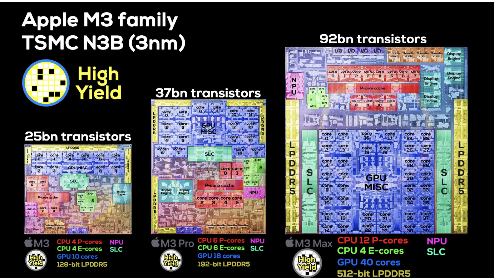
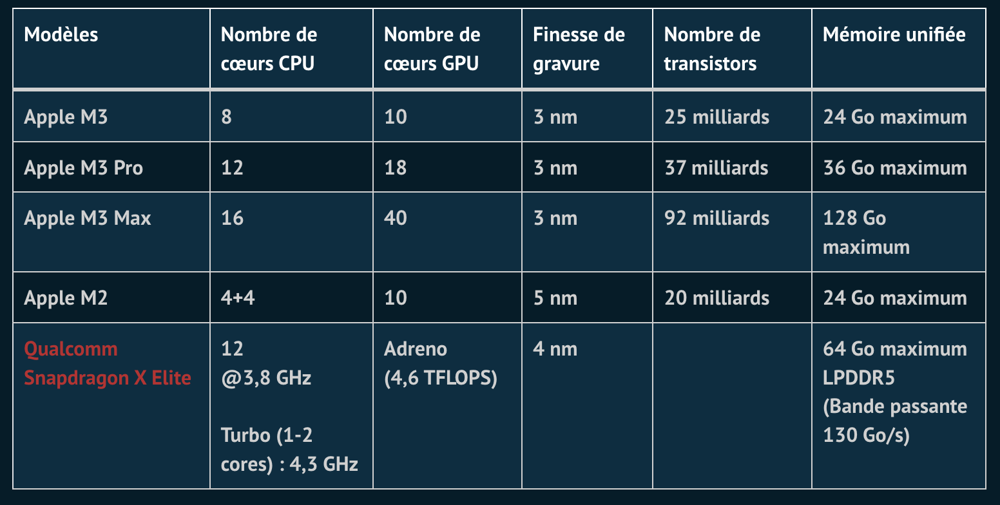

SOC (System On Chip)#
Loi de Moore et miniaturisation progressive#

En 1975, Gordon E. Moore (cofondateur de la société Intel) énonça la conjecture suivante sur l’évolution des capacités des circuits intégrés : dans les microprocesseurs, le nombre de transistors sur une puce va doubler tous les deux ans.

Bien que fondée sur un constat empirique entre les année 1965 et 1975, cette prédiction qu’on appelle aussi "loi de Moore" s’est révélée incroyablement juste.
On est passé de 2250 transistors en 1971 sur un microprocesseur INTEL 4004 (un des premiers microprocesseurs) à plusieurs dizaines de milliards aujourd’hui sur les derniers microprocesseurs. Sur ces derniers, la taille des transistors n’est que de 5 nm soit à peine plus que l’épaisseur de quelques dizaines d’atomes de silicium.

Remarque : le transistor est un composant électronique essentiel : il permet de laisser (ou non) passer un courant électrique.
Cette loi de Moore est (plus ou moins) généralisable à tous les composants électroniques (mémoire, etc...). Cela a permis non seulement une augmentation de puissance de calcul des ordinateurs grâce à une diminution de la distance entre les composants mais également une baisse des coûts (en rassemblant plusieurs composants en un seul). La diminution de la taille des transistors a également permis de baisser la tension électrique pour les faire fonctionner, ce qui a engendré une baisse de consommation énergétique.
La miniaturisation est telle qu’il est possible de rassembler sur une même puce tous les composants essentiels d’un ordinateur (microprocesseur, mémoire, GPU, interfaces d’entrée-sorties, etc....). Ces systèmes complets que l’on retrouve dans tous les smartphones, les tablettes s’appellent System On a Chip (SOC) ou système sur une puce en français.

Exercice 1 :
Si dans les années 70, on pouvait placer 2000 transistors sur une surface de 10 mm2, quelle surface aurait été nécessaire pour placer deux milliards de transistor
Évolution en image de la taille des ordinateurs#
Cet ordinateur n'a pas encore de transistors mais des tubes à vide.


Chaque composant a un rôle spécifique. Ils communiquent entre eux par des bus de différentes vitesses. Chaque composant est remplaçable, et il est possible d'ajouter de nouveaux composants sur la carte mère qui possède des slots d'extension.
Tout un pc sur une seule puce : les SoC#
L'intégration de composants différents au sein d'une même puce#
Le principe d'un système sur puce ou System On a Chip (SoC) est d'intégrer au sein d'une puce unique un ensemble de composants habituellement physiquement dissociés dans un ordinateur classique (ordinateur de bureau ou ordinateur portable).
On peut retrouver ainsi au sein d'une même puce :
- le microprocesseur (CPU)
- la carte graphique (GPU)
- la mémoire RAM
- éventuellement des composants de communication (WiFi, Bluetooth...)
Avantages et inconvénients d'un SoC :
Avantages
- moindre consommation électrique
- moindre encombrement
- pas besoin de refroidissement
- meilleure sécurité (vue globale sur la sécurité qui n'est plus dépendante d'une multitude de composants)
- moindre coût (forte automisation du processus, gros volumes de production)
Inconvénients
- Impossibilité de choisir indépendamment ses composants
- Pas de mise à jour possible / remplacement / ajout d'un composant
- La panne d'un seul composant entraîne la panne totale du SoC
Exemple : le M3 d'Apple#
Les processeurs Apple silicon sont des processeurs SoC et SiP conçus par Apple et utilisant principalement l'architecture ARM. Ils sont la base des appareils iPhone, iPad et Apple Watch ainsi que de produits tels que le HomePod, l'iPod touch et l'Apple TV. Un SoC est également conçu pour sa gamme d'écouteurs sans fil AirPods appelé Apple H1. Le 22 juin 2020, la firme américaine annonce son intention de faire la transition des Macintosh vers ARM et de se passer à terme des processeurs Intel. Bien qu'Apple sous-traite toute sa fabrication, y compris celle de ses propres SoC, elle conçoit les processeurs et contrôle entièrement leur intégration dans le matériel et les logiciels de l'entreprise.
La famille M3 :

Caractéristiques de la famille M3 :

Des puces dédiées à des tâches spécifiques#
L'intégration dans un SoC n'est pas totale : il reste des puces dédiées à des tâches très spécifiques qui ne sont pas forcément intégrées dans le SoC.
Au sein d'un téléphone#
Ainsi, d'après le site iFixit, on peut retrouver ceci dans l'iPhone Pro 13, au côté de la puce A15 :


On voit que (par exemple) qu'il existe une puce spécifique pour gérer l'audio, une puce spécifique pour le module WiFi, une puce spécifique pour le module Modem 5G...
En électronique «grand public»#


Ce composant (pouvant être utilisé dans un montage personnel, sur un Arduino par exemple) ne sert qu'à faire des calculs cryptographiques.
Un principe général#
Il est important de comprendre que certains processeurs sont optimisés pour un certains types de calcul. C'est le cas par exemple d'une carte graphique, qui excelle dans le calcul de rendus de polygones.
On s'est aperçu que cette aptitude à faire des calculs «bêtes et répétitifs» était parfaite pour faire les calculs mathématiques (inutiles) nécessaires au minage des cryptomonnaies. Les cartes graphiques ont donc été détournées de leur usage originel, à cause de la spécificité de l'implémentation de leur puce.
De même, les calculs sur les réseaux de neurones (essentiels en IA) nécessitent une grande rapidité dans les multiplications de matrices. Pour cette raison, Apple a intégré directement dans son SoC A15 une puce spécalisée dans ces calculs (voir plus haut).
Exercice#
Exercice 2 : Polynésie 2021
Un constructeur automobile intègre à ses véhicules des systèmes embarqués, comme par exemple un système de guidage par satellites (GPS), un système de freinage antiblocage (ABS)...
Ces dispositifs utilisent des systèmes sur puces (SoC : System on a Chip).
Citer deux avantages à utiliser ces systèmes sur puces plutôt qu'une architecture classique d'ordinateur.
Bibliographie / Sitographie#
- Site de Gilles Lassus
- Numérique et Sciences Informatiques, Terminale, T. BALABONSKI, S. CONCHON, J.-C. FILLIATRE, K. NGUYEN, éditions ELLIPSES.
- Prépabac NSI, Terminale, G.CONNAN, V.PETROV, G.ROZSAVOLGYI, L.SIGNAC, éditions HATIER.
- https://www.thewindowsclub.com/history-of-computers
- https://perso-etis.ensea.fr//lorandel/M2_SoC/s1.pdf
- https://www.tremplin-numerique.org/apple-a15-vs-a14-quoi-de-neuf-dans-la-puce-de-liphone-13
- https://www.distrelec.be/fr/cryptoprocesseur-breakout-atecc608a-sparkfun-electronics-dev-18077/p/30241877